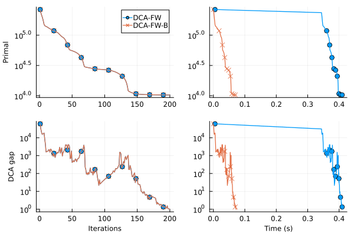

plot_sparsity (generic function with 1 method)Difference-of-Convex Algorithm with Frank-Wolfe
This example shows the optimization of a difference-of-convex problem of the form:
\[min\limits_{x \in \mathcal{X}} \phi(x) = f(x) - g(x)\]
with $f$, $g$ convex functions with access to subgradients and $f$ smooth.
The DCA-FW algorithm constructs local convex models of $\phi$ by linearizing $g$ and approximately optimizes them with FW. It is a local method that converges to a stationary point
using FrankWolfe
using LinearAlgebra
using Random
using SparseArrays
using StableRNGs
using RandomThe convex functions $f$, $g$ will be generated as random convex quadratics:
\[\begin{align} f(x) & = \frac12 x^\top A x + a^\top x + c \\ g(x) & = \frac12 x^\top B x + b^\top x + d \end{align}\]
Setting up the problem functions and data
const n = 500 # Reduced dimension
# Generate random positive definite matrices to ensure convexity
function generate_problem_data(rng)
A_raw = randn(rng, n, n)
A_raw ./= opnorm(A_raw)
A = A_raw' * A_raw + 0.1 * I
B_raw = randn(rng, n, n)
B_raw ./= opnorm(B_raw)
B = B_raw' * B_raw + 0.1 * I
a = randn(rng, n)
b = randn(rng, n)
c = randn(rng)
d = -359434.0
return A, B, a, b, c, d
end
const rng = StableRNGs.StableRNG(1)
const A, B, a, b, c, d = generate_problem_data(rng)([0.3664716461545843 0.007434201971305423 … 0.004451785375884827 0.015514411527022787; 0.007434201971305423 0.34822813947414344 … 0.013654308840956007 -0.025910486878046375; … ; 0.004451785375884827 0.013654308840956007 … 0.3806261404722967 0.0118969109481474; 0.015514411527022787 -0.025910486878046375 … 0.0118969109481474 0.34299337924542433], [0.36858235928505056 0.0036477368657639084 … -0.014747118492049596 -0.009390758842324287; 0.0036477368657639084 0.36832277324228413 … -0.004708423922308739 0.019319726914150886; … ; -0.014747118492049596 -0.004708423922308739 … 0.3718244447067395 -0.0070589804508730414; -0.009390758842324287 0.019319726914150886 … -0.0070589804508730414 0.36976970853592206], [-0.5056985849854947, 1.8254695540945816, 1.1686948924955953, 0.025865043318803068, 0.7618207158940428, -1.9599078996573032, -0.28701522778989075, -1.210555966368952, -0.3476555815275666, 0.36622748810084865 … -1.2418975260665193, -2.042717239142079, -0.977247840514734, -0.9480533072182336, 0.2354971732415276, 1.1489207372892907, 0.26713737924876685, -0.11111819389928967, 1.2106291210589706, -0.36135542009200855], [-1.7352231531269595, -1.0889348569606767, -1.9696069675033783, -0.6944538146281424, 0.12594479576421444, 2.43890963984164, -0.3332102207771672, -1.598587279152474, 0.8970898814075347, 0.7441204116527911 … -0.07885951683533911, 0.921491279700674, 0.8755353895807455, 0.4142785039140312, 1.0607172005644177, -0.9845905380360871, 0.7603797972500105, 1.0314248598279463, -1.0727076372535254, -0.1591576537893938], -0.6622940864130684, -359434.0)We can now define the two functions
function f(x)
return 0.5 * FrankWolfe.fast_dot(x, A, x) + dot(a, x) + c
end
function grad_f!(storage, x)
mul!(storage, A, x)
storage .+= a
return nothing
end
function g(x)
return 0.5 * FrankWolfe.fast_dot(x, B, x) + dot(b, x) + d
end
function grad_g!(storage, x)
mul!(storage, B, x)
storage .+= b
return nothing
end
# True objective function for verification
# It is not needed by the solver
function phi(x)
return f(x) - g(x)
end
lmo = FrankWolfe.KSparseLMO(5, 1000.0)
x0 = FrankWolfe.compute_extreme_point(lmo, randn(n))
res_dca = FrankWolfe.dca_fw(
f,
grad_f!,
g,
grad_g!,
lmo,
copy(x0),
max_iteration=200, # Outer iterations
max_inner_iteration=10000, # Inner iterations
epsilon=1e-5, # Tolerance for DCA gap
line_search=FrankWolfe.Secant(),
verbose=true,
trajectory=true,
verbose_inner=false,
print_iter=10,
use_corrective_fw=true,
use_dca_early_stopping=true,
grad_f_workspace=collect(x0),
grad_g_workspace=collect(x0),
)
res_boost = FrankWolfe.dca_fw(
f,
grad_f!,
g,
grad_g!,
lmo,
copy(x0),
boosted=true,
max_iteration=200, # Outer iterations
max_inner_iteration=10000, # Inner iterations
epsilon=1e-5, # Tolerance for DCA gap
line_search=FrankWolfe.Secant(),
verbose=true,
trajectory=true,
verbose_inner=false,
print_iter=10,
use_corrective_fw=true,
use_dca_early_stopping=true,
grad_f_workspace=collect(x0),
grad_g_workspace=collect(x0),
)(x = [85 ] = -502.522
[284] = 775.324
[313] = -1000.0
[348] = 954.423
[369] = -767.731
[486] = -1000.0, primal = 10304.567974490463, dca_gap = 0.990776420054317, iterations = 200, status = FrankWolfe.STATUS_MAXITER, traj_data = Any[(1, 264614.25360322534, 204027.1909980035, 60587.062605221836, 0.000237398), (2, 234948.14537878457, 203598.59296255893, 31349.55241622564, 0.001344144), (3, 216678.9643822672, 195947.11203259026, 20731.852349676945, 0.001921213), (4, 201445.6341173182, 185764.45871323088, 15681.17540408731, 0.002600436), (5, 185282.0873354841, 169032.77598676656, 16249.311348717556, 0.003314832), (6, 167396.0711382667, 150203.88220247507, 17192.18893579163, 0.004127376), (7, 149533.9659896759, 130955.47491760294, 18578.491072072953, 0.005133681), (8, 143505.98488795705, 135092.7563105511, 8413.228577405955, 0.005984923), (9, 141011.78980510036, 136662.39987109622, 4349.38993400415, 0.006847041), (10, 139402.5112204508, 137807.30518091493, 1595.2060395358703, 0.007528277) … (192, 10321.96548350039, 10320.710367137182, 1.2551163632067306, 0.070147247), (193, 10319.558351855958, 10318.251548747721, 1.306803108236636, 0.070420369), (194, 10317.223064970342, 10316.001635639846, 1.2214293304958408, 0.070674251), (195, 10314.9564389101, 10313.811491997092, 1.1449469130072625, 0.070943276), (196, 10312.75420355564, 10311.195386584042, 1.5588169715977345, 0.071210258), (197, 10310.61750483571, 10309.531056995098, 1.0864478406126354, 0.071447856), (198, 10308.542355987127, 10307.48278798632, 1.0595680008066504, 0.071731233), (199, 10306.526490259683, 10305.508371868314, 1.0181183913685192, 0.071969952), (200, 10304.567974490463, 10303.577198070408, 0.990776420054317, 0.072232898), (200, 10304.567974490463, 10303.577198070408, 0.990776420054317, 0.072699421)])Plotting the resulting trajectory
We modify the y axis to highlight that we are plotting the DCA gap, not the FW gap
data = [res_dca.traj_data, res_boost.traj_data]
label = ["DCA-FW", "DCA-FW-B"]
p_res = plot_trajectories(data, label, marker_shapes=[:o, :x])
ylabel!(p_res.subplots[3], "DCA gap")
display(p_res)This page was generated using Literate.jl.